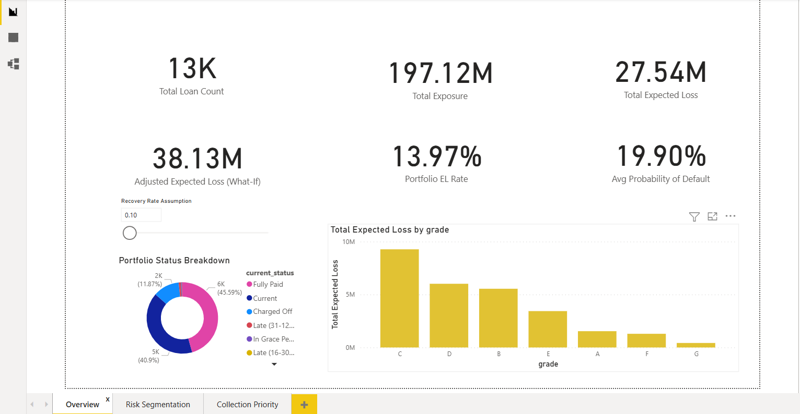
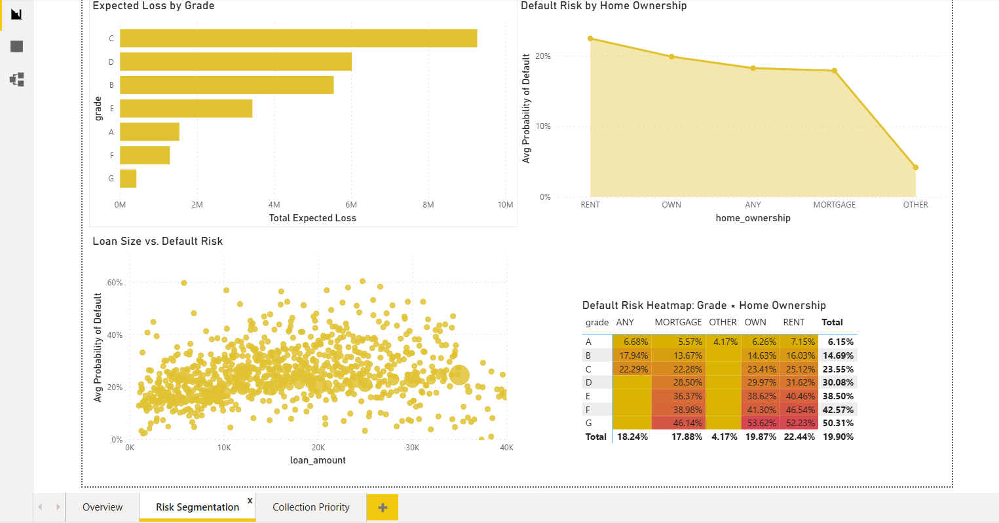
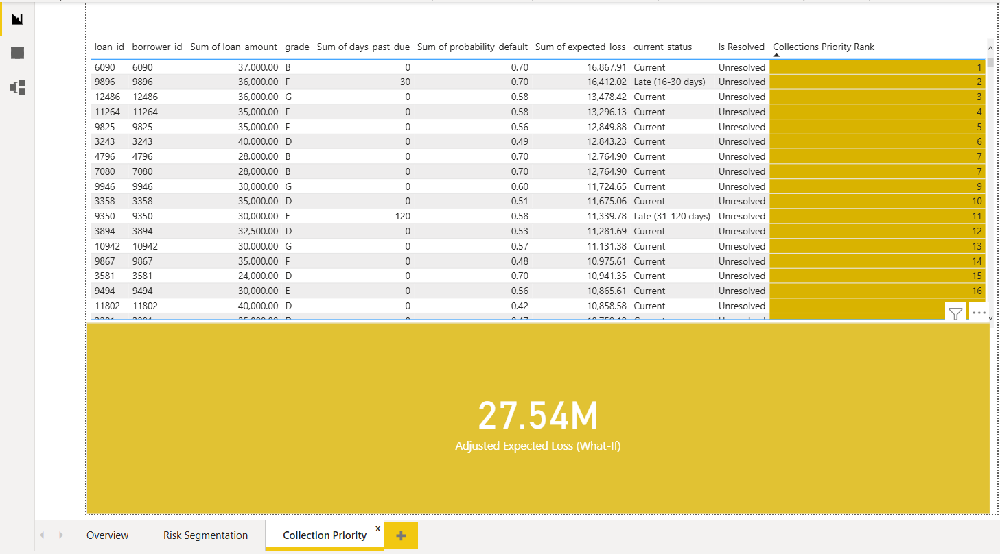
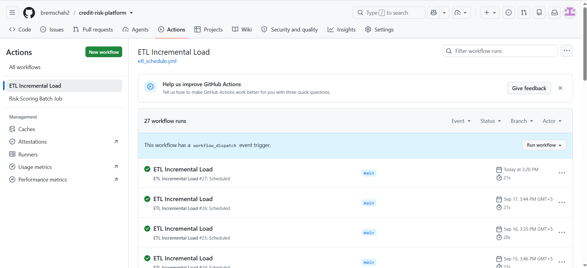

Credit Risk & Collections Prioritization Platform
A cloud platform that predicts loan default, turns that prediction into dollar expected loss, and gives a collections team a ranked worklist. I built every layer myself: infrastructure, pipeline, model, API, dashboard and documentation.
Collections teams can't call everyone
A lender with thousands of open loans needs to know where to spend limited collections effort. A default probability alone isn't enough. A 30% risk on a $2,000 loan matters less than a 15% risk on a $35,000 loan. The platform ranks loans by expected dollar loss, so effort goes where the money is.
How the system fits together
Built on a public Lending Club dataset of 2.26M+ loans. Everything runs on AWS within the free tier.
Built in eight phases
AWS foundation
IAM roles and DynamoDB provisioning on a zero-cost budget.
Schema & data load
Single-table NoSQL design and a stratified load that keeps the true default rate.
Incremental ETL
Batch pipeline on GitHub Actions with a DynamoDB-stored watermark. 27+ unattended scheduled runs.
Model & calibration
Feature importance, model training and isotonic calibration that fixed overconfidence of up to 34 percentage points.
Containerised deployment
Docker image on ECR, deployed to Lambda as a real-time API and a weekly batch scoring job.
Power BI dashboard
Three pages with DAX measures and a what-if recovery-rate parameter.
PM artifacts
Project charter, RAID log and five Architecture Decision Records.
Packaging
README, architecture diagram and presentation materials.
The model was confidently wrong, until it was calibrated
The first model ranked loans reasonably well, but its probabilities were overconfident by up to 34 percentage points at the high-risk end. When those probabilities are multiplied by dollar exposure, that error inflates expected loss on exactly the loans the team would chase first.
I diagnosed the problem with reliability analysis and corrected it with isotonic regression. The Brier score dropped from 0.2235 to 0.1482, a 34% improvement. Ranking power was unchanged (ROC-AUC 0.696), but the dollar figures can now be trusted.
Five Architecture Decision Records
Two AWS relational options were blocked at the account level. That one constraint shaped everything downstream, and each consequence is documented.
| ADR | Decision | Why it matters |
|---|---|---|
| 001 | DynamoDB over Aurora DSQL / Aurora PostgreSQL Serverless | Both Aurora options were blocked by AWS; DynamoDB is free forever |
| 002 | Referential integrity in the application layer, with no foreign keys | Single-table NoSQL design, enforced in code |
| 003 | Scheduled export instead of a live BI connection | Power BI reads a flat export; no paid connector needed |
| 004 | Recovery-rate assumption and model usage boundaries | Prevents the model being misused for approvals |
| 005 | Dependency version pinning for Lambda | Reproducible container builds |
What the collections team sees



Score a loan yourself
The scoring model runs as a public AWS Lambda endpoint. Send a loan and get back a default probability and expected loss.
curl -X POST "https://r4vtqw4oqhhfduewkvsrlbxsqm0mibxl.lambda-url.us-east-1.on.aws/" \
-H "Content-Type: application/json" \
-d '{"loan_amount":15000,"annual_income":65000,"dti":18.5,"term_months":36,
"sub_grade":"B3","home_ownership":"RENT","employment_length":"5 years",
"mort_acc":0,"inq_last_6mths":1,"delinq_2yrs":0}'
→ {"probability_default": 0.1761, "expected_loss": 1717.0, "exposure": 15000.0,
"recovery_rate_assumption": 0.35, "model_version": "logreg_v3_calibrated"}

Cloud & infrastructure
AWS DynamoDB, Lambda, IAM, ECR · Docker · GitHub Actions
Data & ML
Python, boto3, pandas · scikit-learn, XGBoost · isotonic calibration, permutation importance
BI & delivery
Power BI, DAX, what-if parameters · charter, RAID log, ADRs
What I'd add in production
- Model drift monitoring and scheduled recalibration
- Champion/challenger testing against a gradient-boosted model
- Authentication and rate limiting on the public API
- Bureau credit-score features to lift ROC-AUC